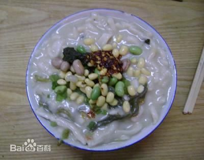

| 洛阳 luoyang | |||||||||||||||||||
浆面条 |
|||||||||||||||||||
| 浆面条（也叫酸面条，其原因是发酵后的浆酸味十足），河南洛阳的汉族传统名吃。是以绿豆浆发酵制作面浆，经特殊工艺而成的面条。洛阳、汝州、新郑等地浆面条，制作简单，成本低、味道美、易于消化，酸味独特，咸香适口，因而自古以来流传不衰，成为颇具浓厚地方特色的地方名食。浆面条不同于浆水面。 |  | ||||||||||||||||||
| 历史传说 | |||||||||||||||||||
| 据说清朝末年洛阳一穷户人家，将捡来的绿豆磨成豆浆，隔了数日，发现豆浆发馊变酸，倒了舍不得，遂胡乱丢些菜叶，熬成糊状，一吃味道鲜美，后来家家效仿。旧社会洛阳穷人多，一般人家买不起面粉。常常以菜代面。花个三五分钱上街舀两瓢酸浆，回家做浆饭。切少许萝卜丝或白菜叶下锅，待浆起沫后勾点面粉，稠稠的，谓之“挑浆饭”。若再下点小米，谓之“浆米气儿”。每到饭时，满院飘香。孩子们闻到浆味儿，兴奋异常。三碗两碗，风卷残云。若此时家中来客，浆饭招待，那比请他吃大鱼大肉还过瘾。当然一般小康之家做浆面条儿讲究了：白面条、芹菜、大绿豆、（或油炸花生米），再佐以韭菜花或辣椒油，绿白红酸得辣，生生能把人的馋虫给勾了去，“剩浆面条儿”是浆饭中的上吕，民谚云：“浆饭热三遍，拿肉都不换”可见其魅力。经过数百年的改良，眼下粉浆面条的制作方法是非常考究的，浆面条，顾名思义，是以面条为主料，但这种面条用的不是上等的面粉，正宗的多为一些杂粮面，面条一定要细。最重要的一点是这辅料-粉浆，这粉浆的好坏，直接决定整个小吃的味道。 做浆时，先把绿豆或豌豆用水浸泡，膨胀后放在石磨上磨成粗浆，用纱布过滤去渣，然后放在盆中或罐里。一两天后，浆水发酵变酸，粉浆就做好了。做时把酸浆倒在锅里煮至80℃的时候，浆水的表层泛起一层白沫．这时，要用勺子轻轻打浆，浆沫消失后，浆体就变得细腻光滑，接着再下面条等其他调料即可。 另外一种辅料是芝麻叶，一般我们做面条时都是放青菜的，但正宗粉浆面条里放的都是芝麻叶，但芝麻叶不太好做，也很难找，很多人都用芹菜叶代替。芝麻叶要选初长成叶的叶心，洗干净之后，用开水焯一下，然后放在阴凉的地方晒干保存起来备用。 如今方城县的粉浆面条已被洛阳粉浆面条所代替，洛阳人的吃法也是非常讲究的，以前的面条里的配菜基本都是黄豆、芹菜、咸菜丝老三样，但眼下基本上都是十几种时令小菜，像酸白菜丁、黄瓜丁、芹菜丁、胡萝卜丁、白萝卜丁，小尖椒、榨菜丝、雪菜丁、黄豆等等 ，不过这些都是事先腌制好的，已经入了味，可见下的功夫非同一般，所以，这吃起来，味道不用再说了。 浆面条传承千年，流传至今。 当前，洛阳水席（一道名吃）与洛阳牡丹和洛阳龙门齐名，被称为洛阳的三绝，在洛阳水席中就有浆面条这道面食。 |
|||||||||||||||||||
| 饮食文化 | |||||||||||||||||||
| 粉浆面条是河南特色小吃，2007年被河南省商务厅命名为河南十大传统名小吃之一，粉浆面条所用的粉浆是制作绿豆淀粉过滤出来的浆水，经自然发酵至有酸腐味道，用来制作面条，这个粉浆也就是北京人称之为“豆汁儿”的东西，喜欢的人称之为美味，不喜欢这个味道的人看见就躲着走。 | |||||||||||||||||||